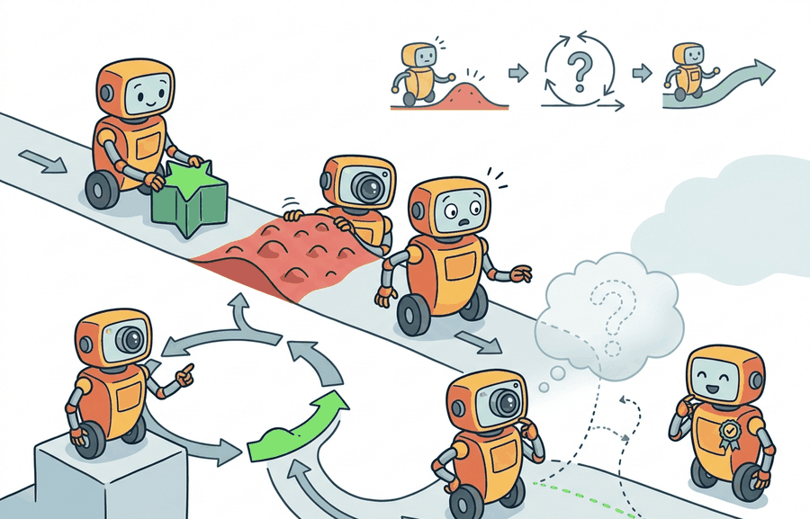

"Deployment is where training becomes a subscription service with consequences."
A Fielded Policy Reading Its Logs

This section assumes familiarity with distribution shift and drift detection from section 53.1, and with open-world adaptation from section 51.4. The governed pipeline introduced here is extended in section 57.2, which addresses catastrophic forgetting as the central technical risk that makes staged rollout necessary, and in section 57.3, which covers replay and regularization strategies for managing it.
A warehouse robot ships with a policy trained on a thousand objects. Six months later, new product lines arrive and pick rates drop 30%. The team wants the robot to learn from field data, but a silent weight update could fix grasping while quietly breaking collision avoidance. No one notices until the first incident report. Embodied systems deployed in the real world will always drift; the question is whether the update loop is governed or improvised. Here you will build the four-stage pipeline that separates monitoring, candidate training, validation, and staged rollout, so adaptation is controlled, auditable, and safe to run continuously.
The update pipeline is part of the embodied system. If the learning loop cannot be audited, then post-deployment improvement is operating outside the same scientific standard demanded of perception, planning, and control.
Theory
Post-deployment learning should be modeled as a governed pipeline:
$$D_t \rightarrow U_t \rightarrow \theta_{t+1} \rightarrow V_t \rightarrow R_t,$$
where collected field data $D_t$ feeds an update rule $U_t$, producing candidate parameters $\theta_{t+1}$, which are evaluated by validation suite $V_t$ before rollout decision $R_t$. The key idea is that deployment data and deployment decisions are connected, but not collapsed into one uncontrolled online loop.
Notice that rollback is the only stage in the pipeline where nothing can go wrong: it just points at the previous version. Every other stage is where engineers spend their weekends.
| Stage | Artifact | Failure If Missing |
|---|---|---|
| Monitoring | drift and intervention report | no justified reason to update |
| Candidate update | versioned training config and data slice | cannot explain what changed |
| Validation | old-task, new-task, and safety panel | silent regressions |
| Rollout | shadow or canary decision log | unsafe direct promotion |
| Rollback | pointer to previous stable version | slow or impossible recovery |
Worked Example
Suppose a shelf-picking robot sees more reflective packaging after a supplier change. The new data may justify a candidate perception update, but only after the system verifies that prior carton and bottle skills still work.
def validate_update_pipeline(payload: dict[str, object]) -> dict[str, object]:
assert payload, "payload must not be empty"
return payload
update_pipeline = {
"field_signal": "drop in grasp success on reflective cartons",
"candidate_update": "fine-tune perception head on corrected examples",
"validation_panel": ["old carton tasks", "new reflective carton tasks", "safety replay set"],
"rollout_mode": "shadow_then_canary",
}
print(validate_update_pipeline(update_pipeline)){'field_signal': 'drop in grasp success on reflective cartons', 'candidate_update': 'fine-tune perception head on corrected examples', 'validation_panel': ['old carton tasks', 'new reflective carton tasks', 'safety replay set'], 'rollout_mode': 'shadow_then_canary'}The expected output should make the release logic explicit. If the update pipeline does not name retained-task checks and rollout mode, then "learning after deployment" is really just ungoverned retraining.
- Detect a field signal such as drift or recurring intervention.
- Create a candidate update from labeled data, replay, or adapters.
- Evaluate old tasks, new tasks, and safety cases in one fixed panel.
- Deploy only in shadow or canary mode first.
- Promote or roll back according to explicit thresholds.
Replay stores, versioned experiment trackers, adapter-tuning libraries, and deployment registries are valuable here because they preserve provenance. The shortcut is helpful only when the tool chain retains old-task panels, candidate lineage, and rollback pointers rather than just storing a new checkpoint.
Teams often let new field data dominate the update pipeline without preserving enough old-task evidence. The result is adaptation that looks good on the latest problem and quietly regresses earlier competence.
Amazon Robotics' Proteus autonomous mobile robot and the Boston Dynamics Spot inspection fleet both ship perception updates through staged rollout mechanisms rather than live online learning: a candidate model runs in shadow mode alongside the production model for a defined window (often 24 to 72 hours of operational coverage), and promotion requires the shadow model to match or exceed the production model on a fixed set of logged scenarios before any canary release to live units. The staged window is not arbitrary: it is sized to cover the diurnal and shift-change variation in the environment so that a model that only works well on the morning shift cannot pass validation.
A hospital delivery robot that sees new floor reflections after waxing may need a localization update. A governed pipeline first labels the reflective cases, then checks retained hallway navigation and elevator entry, then promotes the update in shadow mode before granting live control authority.
An open problem is how to incorporate self-supervised field data from Open X-Embodiment (which aggregates over 1 million robot episodes across 22 robot embodiments) into a safety-gated update loop without losing the task-specificity that makes a fine-tuned policy useful on a single arm. The tension is concrete: a Franka Panda grasping policy updated with broad cross-embodiment data may improve novel-object generalization by 8 to 12 percentage points while quietly degrading the precision grip force control that prevents damage to fragile items, because cross-embodiment pretraining has never seen the wrist torque limits of that specific gripper. Closing this gap requires validation panels that include closed-loop hardware replay on the target robot, not just held-out behavioral cloning loss on the cross-embodiment corpus.
Can you name the field signal, candidate update, retained-task panel, and rollout mode for one real robot application? If any of those are missing, the learning loop is still underspecified.
In production systems, the update object is usually larger than a checkpoint. It should include the exact slice of field data, labeling protocol, adapter or fine-tuning configuration, validation manifest, and the deployment ticket that authorized the shadow or canary run. Tools such as PyTorch training jobs, Weights and Biases or TensorBoard traces, and ROS 2 replay logs are useful here only when they preserve this bundle as one inspectable release artifact rather than scattering evidence across unrelated dashboards.
A strong post-deployment recipe also distinguishes perception adaptation from control adaptation. If a warehouse robot fails because carton appearance changed, the first candidate may be a narrow vision update with frozen planner and controller interfaces. If the failure instead comes from timing drift or changed vehicle dynamics, the update path may involve different evaluation panels, different rollback rules, and stricter closed-loop replay before any canary release.
When updating only a perception head after deployment, use a LoRA adapter (via the peft library with LoraConfig(target_modules=["q_proj","v_proj"])) rather than full fine-tuning: this freezes the backbone by construction and limits weight drift to the adapter matrices, so the planner and controller interfaces cannot be inadvertently shifted. Set lora_alpha to twice r as a starting point; a ratio below 1.0 often produces adapters too weak to correct real distribution shift, while a ratio above 4.0 tends to destabilize the retained-task panel.
In serious deployments, learning after deployment also changes organizational interfaces. Operators, data curators, and release owners need a shared artifact vocabulary so that a model update can be challenged and reversed without ambiguity.
The staged pipeline matters most when distribution shift is correlated with time of day, seasonal change, or operational context rather than being a random fluctuation. A robot that sees fewer training examples of wet floors in summer will encounter them in winter; if its perception update was triggered only by recent data, the summer model may degrade exactly when wet-floor robustness is most needed. Consider scale: a validation panel covering only the last 7 days of logs may include zero wet-floor encounters, while a panel spanning 90 days typically captures 15 to 40 such cases, enough to detect a regression before promotion. Staging creates a forcing function: the validation panel must be drawn from a distribution that spans known temporal and contextual variation, not just the most recent week. When that panel is narrow, this is called the temporally biased update trap, and the failure will appear as a surprise regression months after the update was promoted.
Learning after deployment is a governed release process, not a permission slip for uncontrolled online adaptation.
Design a field-learning pipeline for a mobile robot whose localization degrades in reflective hallways. Name the field signal, candidate update, retained-task panel, and rollout mode.
Section References
Kirkpatrick, J. et al. Overcoming catastrophic forgetting in neural networks. PNAS, 2017.
Use for regularization-based retention and its assumptions.
Lopez-Paz, D. and Ranzato, M. Gradient Episodic Memory for Continual Learning. NeurIPS, 2017.
Use for replay-constrained updates and task-stream evaluation.
What's Next?
Next, continue with Section 57.2, where the main technical risk becomes catastrophic forgetting.